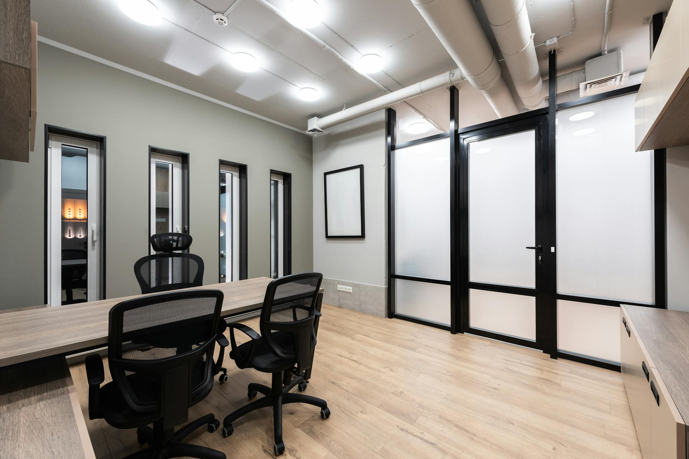
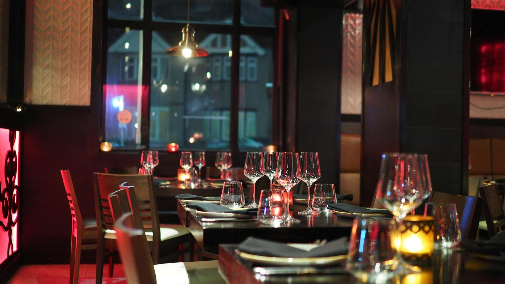
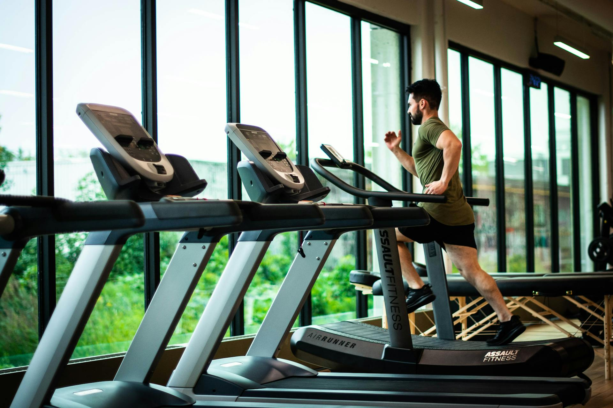
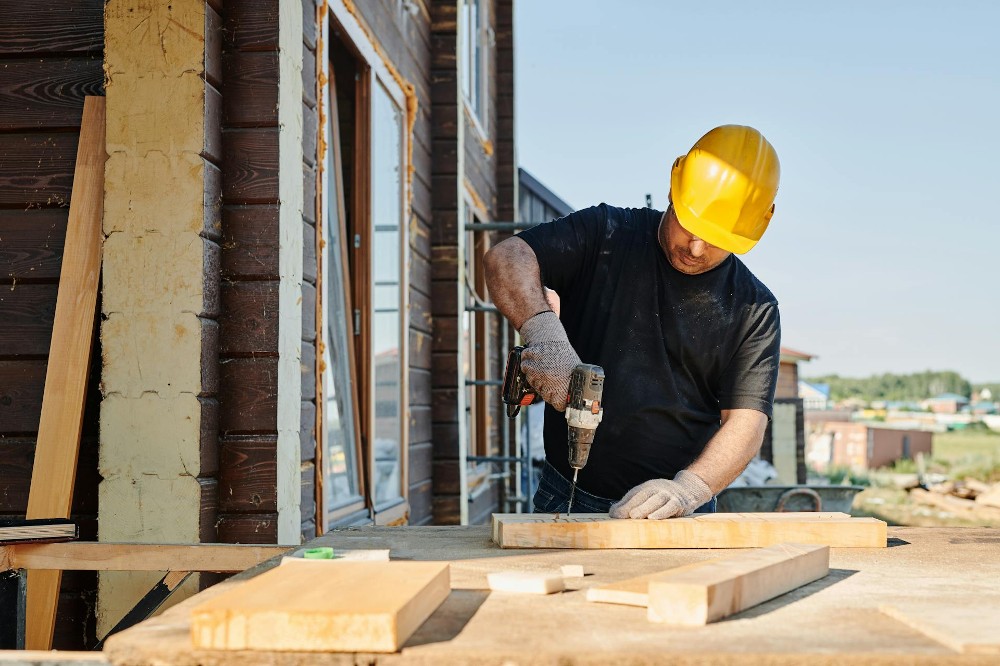
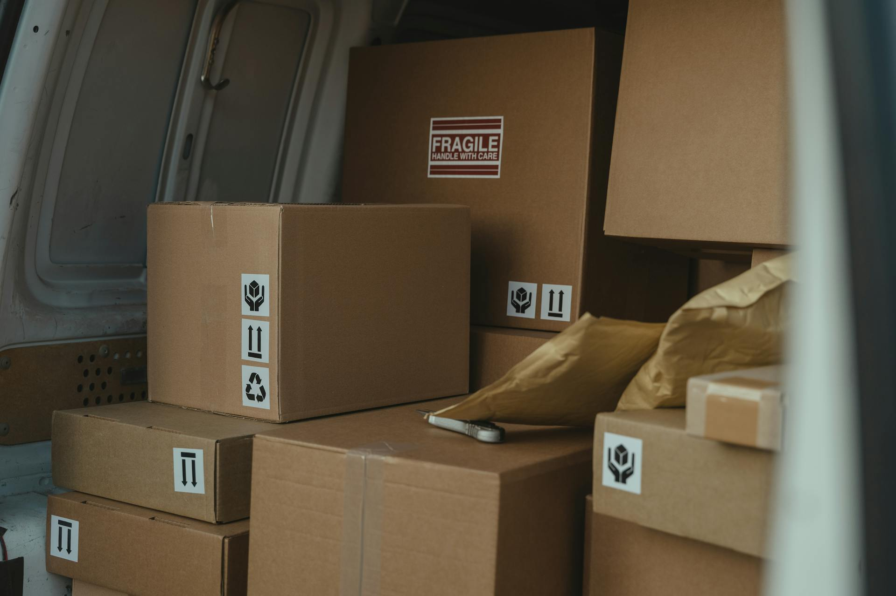
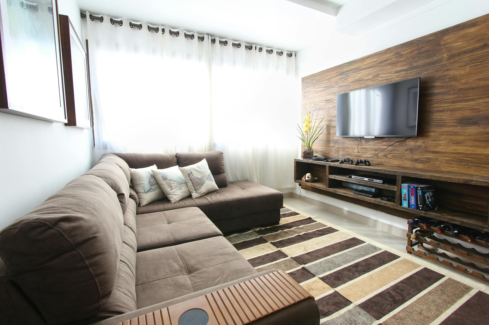

Nos services pour les professionnels

Bureaux
Immeubles

Restaurants

Salles de sport

Fins de chantier

Encombrants
Nos services pour les particuliers

Voiture
Processus de nettoyage complet de votre véhicule :
-
Prélavage extérieur :
- Application d’une mousse active pour dissoudre la saleté en surface (poussière, boue, etc.).
- Rinçage haute pression pour éliminer les contaminants.
-
Dégoudronnage et décontamination ferreuse :
- Utilisation d’un produit spécifique pour éliminer les particules de goudron et les contaminants ferreux présents sur la carrosserie et les jantes.
-
Nettoyage des jantes :
- Application d’un nettoyant adapté pour dissoudre le freinage et la crasse incrustée.
- Brossage minutieux à l’aide de pinceaux et de brosses spéciales pour les recoins difficiles d’accès (écrous, étriers de frein, etc.).
- Rinçage à haute pression.
-
Lavage manuel :
- Lavage de la carrosserie avec un gant en microfibre et un shampoing adapté pour éviter les rayures.
- Nettoyage détaillé des zones sensibles : joints, rétroviseurs, grilles de calandre, etc.
-
Décontamination complète de la carrosserie :
- Passage d’une clay bar (pâte décontaminante) sur l’ensemble du véhicule pour retirer les impuretés profondes.
-
Séchage :
- Séchage à la main avec des serviettes en microfibre de qualité pour éviter les traces d’eau.
-
Polissage (si nécessaire) :
- Application d’un polish pour enlever les petites rayures et redonner de l’éclat à la peinture.
-
Traitement des surfaces vitrées :
- Nettoyage intérieur et extérieur des vitres avec un produit spécifique pour un résultat sans traces.
-
Nettoyage de l’intérieur :
- Aspiration complète de l’intérieur : tapis, sièges, coffre et recoins difficiles d’accès.
- Nettoyage des plastiques intérieurs (tableau de bord, consoles, portières) avec des produits adaptés.
- Utilisation de pinceaux de detailing pour atteindre les zones délicates : aérations, boutons, interstices.
-
Nettoyage des sièges et tapis :
- Shampooing des sièges en tissu et des tapis avec une machine à injection/extraction (shampooineuse) pour éliminer les taches et les odeurs.
- Traitement des sièges en cuir avec un produit nourrissant et protecteur.
-
Désinfection et déodorisation :
- Application d’un produit désinfectant pour éliminer les bactéries et les mauvaises odeurs dans l’habitacle.
- Diffusion d’un parfum agréable pour une finition fraîche.
-
Finition extérieure :
- Application d’une cire protectrice sur la carrosserie pour protéger la peinture et offrir un effet brillant.
- Traitement des pneus avec un produit rénovateur pour un aspect neuf.
Ce processus garantit un nettoyage complet et professionnel, en prenant soin des moindres détails pour redonner à votre véhicule son éclat d’origine.

Remise d'appartement
Notre société de nettoyage est spécialisée dans l’entretien de restaurants, salles de sport, bureaux, immeubles et tout autre type de local commercial. Nous proposons des services complets pour garantir la propreté et l’hygiène de vos espaces professionnels, en respectant les plus hauts standards de qualité.
Nos services incluent :
-
Nettoyage des sols :
- Utilisation d’une monobrosse pour le nettoyage en profondeur des sols durs (carrelage, marbre, vinyle, etc.), éliminant les traces et salissures incrustées.
- Dégraissage des sols dans les cuisines de restaurants et autres zones à fort passage pour un environnement impeccable et sécurisé.
-
Entretien des vitres et surfaces vitrées :
- Nettoyage intérieur et extérieur des vitres, même en hauteur, avec un résultat sans traces pour laisser passer la lumière et offrir une visibilité optimale.
- Nettoyage de toutes les surfaces vitrées (cloisons, portes en verre, etc.) pour une transparence parfaite.
-
Dépoussiérage complet :
- Dépoussiérage des surfaces horizontales et verticales : bureaux, étagères, meubles, appareils électroniques, etc.
- Nettoyage des luminaires, prises, interrupteurs et autres surfaces délicates à l’aide de techniques adaptées.
-
Nettoyage des zones communes :
- Entretien des halls, couloirs, salles d’attente et autres espaces partagés dans les immeubles et bureaux.
- Désinfection et nettoyage approfondi des sanitaires et vestiaires (idéal pour les salles de sport), garantissant hygiène et confort.
-
Dégraissage des surfaces spécifiques :
- Nettoyage et dégraissage des zones fortement sollicitées comme les cuisines professionnelles, y compris plans de travail, hottes, et équipements en inox.
-
Entretien des moquettes :
- Aspiration et shampooing des moquettes pour un nettoyage en profondeur, en éliminant la saleté et les allergènes.
-
Gestion des déchets :
- Collecte et gestion des déchets dans tous les types de locaux, assurant un environnement de travail propre et sans encombrement.
Pourquoi nous choisir ?
- Équipe professionnelle et formée, utilisant des produits et équipements de haute qualité adaptés à chaque surface.
- Flexibilité dans les horaires d’intervention, pour minimiser les perturbations pendant vos heures d’ouverture.
- Engagement écologique, en privilégiant des produits respectueux de l’environnement et en favorisant des pratiques durables.
Faites confiance à notre expertise pour un nettoyage professionnel et complet de vos locaux commerciaux. Nous nous engageons à maintenir un environnement propre, sain et accueillant pour vos employés, clients et visiteurs.

Canapé
Processus de nettoyage complet pour canapés, moquettes et matelas :
-
Inspection préalable :
- Identification des matériaux (tissu, cuir, moquette synthétique, etc.) pour choisir les produits adaptés.
- Repérage des taches tenaces et zones nécessitant une attention particulière.
-
Aspiration en profondeur :
- Aspiration minutieuse des surfaces pour enlever la poussière, les poils d’animaux, et les débris en surface.
- Utilisation d’accessoires spéciaux pour les recoins difficiles d’accès (coutures, coins du canapé, bords des tapis).
-
Traitement des taches :
- Application d’un détachant ciblé sur les zones tachées (aliments, boissons, etc.).
- Travail à la main ou avec des brosses pour déloger les taches incrustées sans abîmer le tissu.
-
Shampooing et nettoyage en profondeur :
- Utilisation d’une machine à injection/extraction (shampooineuse) pour nettoyer en profondeur les tissus des canapés, moquettes et matelas.
- Injection d’une solution de nettoyage dans les fibres, suivie d’une extraction immédiate pour enlever saleté, allergènes, et résidus.
-
Nettoyage des coins et des détails :
- Travail de précision avec des pinceaux de detailing pour nettoyer les coutures, les plis des canapés et moquettes.
- Nettoyage des zones difficiles d’accès, comme les pieds de canapé ou les bordures des matelas.
-
Désinfection et élimination des allergènes :
- Application d’un produit désinfectant spécial pour tuer les acariens, bactéries et autres allergènes qui peuvent se cacher dans les tissus.
- Utilisation d’un produit antibactérien doux mais efficace, sans danger pour les matériaux.
-
Séchage rapide :
- Séchage accéléré grâce à des ventilateurs pour éviter l’humidité stagnante dans les tissus et les moquettes.
- Séchage des matelas et canapés dans des conditions optimales pour éviter la formation de moisissures.
-
Traitement des odeurs :
- Neutralisation des mauvaises odeurs avec un désodorisant spécialement conçu pour les textiles.
- Diffusion d’un parfum léger et agréable pour une sensation de fraîcheur durable.
-
Finition des surfaces (si applicable) :
- Application d’un protecteur pour tissu (imperméabilisant) pour prévenir les futures taches sur les canapés ou moquettes.
- Traitement des surfaces en cuir avec un soin nourrissant pour prolonger la durée de vie du matériau et restaurer son éclat.
Ce processus de nettoyage minutieux assure un résultat impeccable, en éliminant saleté, taches et allergènes, tout en prenant soin de vos tissus et matériaux, pour un environnement propre et sain.

Matelas
Processus de nettoyage complet pour canapés, moquettes et matelas :
-
Inspection préalable :
- Identification des matériaux (tissu, cuir, moquette synthétique, etc.) pour choisir les produits adaptés.
- Repérage des taches tenaces et zones nécessitant une attention particulière.
-
Aspiration en profondeur :
- Aspiration minutieuse des surfaces pour enlever la poussière, les poils d’animaux, et les débris en surface.
- Utilisation d’accessoires spéciaux pour les recoins difficiles d’accès (coutures, coins du canapé).
-
Traitement des taches :
- Application d’un détachant ciblé sur les zones tachées (aliments, boissons, etc.).
- Travail à la main ou avec des brosses pour déloger les taches incrustées sans abîmer le tissu.
-
Shampooing et nettoyage en profondeur :
- Utilisation d’une machine à injection/extraction (shampooineuse) pour nettoyer en profondeur les tissus des canapés, moquettes et matelas.
- Injection d’une solution de nettoyage dans les fibres, suivie d’une extraction immédiate pour enlever saleté, allergènes, et résidus.
-
Nettoyage des coins et des détails :
- Travail de précision avec des pinceaux de detailing pour nettoyer les coutures, les plis des canapés et les bordures des moquettes.
- Nettoyage des zones difficiles d’accès, comme les pieds de canapé ou les bordures des matelas.
-
Désinfection et élimination des allergènes :
- Application d’un produit désinfectant spécial pour tuer les acariens, bactéries et autres allergènes qui peuvent se cacher dans les tissus.
- Utilisation d’un produit antibactérien doux mais efficace, sans danger pour les matériaux.
-
Séchage rapide :
- Séchage accéléré grâce à des ventilateurs pour éviter l’humidité stagnante dans les tissus et les moquettes.
- Séchage des matelas et canapés dans des conditions optimales pour éviter la formation de moisissures.
-
Traitement des odeurs :
- Neutralisation des mauvaises odeurs avec un désodorisant spécialement conçu pour les textiles.
- Diffusion d’un parfum léger et agréable pour une sensation de fraîcheur durable.
-
Finition des surfaces (si applicable) :
- Application d’un protecteur pour tissu (imperméabilisant) pour prévenir les futures taches sur les canapés ou moquettes.
- Traitement des surfaces en cuir avec un soin nourrissant pour prolonger la durée de vie du matériau et restaurer son éclat.
Ce processus de nettoyage minutieux assure un résultat impeccable, en éliminant saleté, taches et allergènes, tout en prenant soin de vos tissus et matériaux, pour un environnement propre et sain.